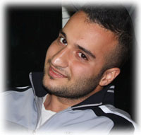

<!DOCTYPE html PUBLIC "-//W3C//DTD XHTML 1.1//EN" "http://www.w3.org/TR/xhtml11/DTD/xhtml11.dtd">
<html xmlns="http://www.w3.org/1999/xhtml">
<head>
</head>
<body style="padding-top: 5px;"></body>
</html>
<meta http-equiv="Content-Type" content="text/html; charset=utf-8"><meta name="description" content="Armin Balalaie's Homepage"/><meta name="keywords" content="software engineering, armin, balalaie, cloud computing, big data, distributed systems, sharif university"/><meta name="author" content="Armin Balalaie"/>
<link href="style.css" media="screen" rel="stylesheet" type="text/css" />
<title>Armin Balalaie</title>
<script>
  (function(i,s,o,g,r,a,m){i['GoogleAnalyticsObject']=r;i[r]=i[r]||function(){
  (i[r].q=i[r].q||[]).push(arguments)},i[r].l=1*new Date();a=s.createElement(o),
  m=s.getElementsByTagName(o)[0];a.async=1;a.src=g;m.parentNode.insertBefore(a,m)
  })(window,document,'script','//www.google-analytics.com/analytics.js','ga');

  ga('create', 'UA-65949726-1', 'auto');
  ga('send', 'pageview');

</script>
<div class="container">
<div class="main">
<div class="footer"></div>

<div class="content">
<table>
	<tbody>
		<tr>
			<td style="padding-right:30px" valign="top" width="10%"> <a href="https://scholar.google.com/citations?user=QAozvgcAAAAJ&amp;hl=en" target="_blank">  </a> <a href="https://ir.linkedin.com/in/arminbalalaie" target="_blank">  </a> <a href="https://github.com/arminbalalaie" target="_blank">  </a></td>
			<td>
			<h1>Armin Balalaie</h1>

			<p><br />
			I am a second-year PhD student in the <a href="http://www.informatics.uci.edu/" target="_blank">Department of Informatics</a> at <a href="http://www.uci.edu" target="_blank">University of California, Irvine</a>. Before joining UCI, I was a Senior Software Engineer in <a href="http://www.pegahtech.ir">Pegah Tech</a> working with a great team to build the first Mobile Backend as a Service in Iran (<a href="http://www.backtory.com">Backtory</a>). Before that, I finished my&nbsp;MSc studies in the <a href="http://ce.sharif.ir" target="_blank">Department of Computer Engineering (CE)</a> at <a href="http://www.sharif.ir" target="_blank">Sharif University of Technology (SUT)</a>&nbsp;under supervision of&nbsp;<a href="http://sharif.edu/~heydarnoori" target="_blank">Abbas Heydarnoori</a>.&nbsp;</p>

			<section>Research Interests</section>

			<ul>
				<li><strong>Software Engineering and Cloud Computing</strong>

				<ul>
					<li>Cloud-native architectures, Cloud migration, DevOps</li>
				</ul>
				</li>
				<li><strong>Distributed Data Stores</strong>
				<ul>
					<li>Strong Consistency in Scale, NoSQL and NewSQL data stores, Database-as-a-Service</li>
				</ul>
				</li>
			</ul>

			<section>Education</section>

			<ul>
				<li><strong>Ph.D. in Software Engineering</strong> (2016-present) <a href="http://www.informatics.uci.edu/">Department of Informatics</a>, <a href="http://www.uci.edu">University of California -&nbsp;Irvine</a>, Irvine, USA</li>
				<li><strong>M.Sc. in Software Engineering</strong> (2013-2016) <a href="http://ce.sharif.ir" target="_blank">Department of Computer Engineering (CE)</a>, <a href="http://www.sharif.ir" target="_blank">Sharif University of Technology (SUT)</a>, Tehran, Iran</li>
				<li><strong>B.Sc. in Software Engineering</strong> (2008-2013), <a href="http://cse.shirazu.ac.ir" target="_blank">Department of Electrical and Computer Engineering (ECE)</a>, <a href="http://www.shirazu.ac.ir" target="_blank">Shiraz University</a>, Shiraz, Iran</li>
				<li><strong>Diploma in Physics and Mathematics</strong> (2001-2008), National Organization for Development of Exceptional Talents (NODET), Rasht, Iran</li>
			</ul>

			<section>Publications</section>

			<ol>
				<li><strong>Balalaie, A.</strong>, Heydarnoori, A., and Jamshidi, P. ``Migrating to Cloud-Native Architectures Using Microservices: An Experience Report.`` To Appear in Proceedings of <i>1st International Workshop on Cloud Adoption and Migration (CloudWay)</i>, Sep. 2015, Taromina, Italy. (Co-located with ESOCC 2015). <a href="http://arxiv.org/abs/1507.08217" target="_blank">arxiv</a></li>
				<li><strong>Balalaie, A.</strong>, Heydarnoori, A., and Jamshidi, P. ``Microservices Enables DevOps: an Experience Report on Migration to a Cloud-Native Architecture`` To Appear in <i>IEEE Software Special Issue on Software Engineering for DevOps</i>, May 2016.</li>
				<li><strong>Balalaie, A.</strong>, Heydarnoori, A., and Jamshidi, P. ``Microservices Migration Patterns`` Technical Report No. 1, TR-SUT-CE-ASE-2015-01, Automated Software Engineering Group, Sharif University of Technology, Oct. 2015. <a href="http://ase.ce.sharif.edu/pubs/techreports/TR-SUT-CE-ASE-2015-01-Microservices.pdf" target="_blank">pdf</a></li>
			</ol>

			<section>Research Experience</section>

			<ul>
				<li><strong>Automated Software Engineering Lab</strong>, Sharif University of Technology, under supervision of <a href="http://sharif.edu/~heydarnoori" target="_blank">Abbas Heydarnoori</a>, February 2013 - Present</li>
				<li><strong>High Performance Computing Lab</strong>, Shiraz University, under supervision of <a href="http://www.cse.shirazu.ac.ir/~khunjush/" target="_blank">Farshad Khunjush</a>, January 2013 - July 2013</li>
				<li><strong>APA Lab</strong>, Shiraz University, under supervision of <a href="http://www.cse.shirazu.ac.ir/~ali/" target="_blank">Ali Hamzeh</a> and Sattar Hashemi, November 2009 - November 2010</li>
			</ul>

			<section>Work Experience</section>

			<ul>
				<li><strong>Stellus Technologies</strong>, Software Engineer Intern, June 2017 - September 2017, Irvine, USA</li>
				<li><strong>Pegah DataMiners of Sharif</strong>, Senior Software Engineer, April 2015 - July 2016, Tehran, Iran

				<ul>
					<li><a href="http://www.backtory.com" target="_blank"><strong>Backtory</strong></a>: It is the first Mobile Backend as a Service (MBaaS) platform in Iran which aims to remove the server-side programming&#39;s burden from the mobile developers&#39; shoulders via providing them with scalable backend services.</li>
				</ul>
				</li>
				<li><strong>Center of Intelligent Information Systems</strong>, Senior Software Engineer, July 2014 - November 2015, Tehran, Iran
				<ul>
					<li><strong>SharifOSS</strong>: It is a national Operational Support System (OSS) for Iran&rsquo;s Telecommunication Infrastructure company based on TM Forum standards.</li>
				</ul>
				</li>
				<li><strong>Amid Rayaneh Sharif</strong>, Senior Software Engineer and Data Analyst, August 2013 - June 2014, Tehran, Iran
				<ul>
					<li><strong>Finding Influential Users in Social Networks</strong>: In this project, cutting edge technologies were used like Hadoop for distributed computation and MongoDB as a storage for crawled data.</li>
				</ul>

				<ul>
					<li><strong>Synchronization System between Neo4j and Relational Databases</strong></li>
				</ul>
				</li>
			</ul>

			<section>Contact Information</section>

			<ul>
				<li><i>armin.balalaie &lt;at&gt; gmail &lt;dot&gt; com</i></li>
				<li><i>abalalai &lt;at&gt; uci &lt;dot&gt; edu</i></li>
			</ul>
			</td>
		</tr>
	</tbody>
</table>
</div>

<div class="clearer"><span>Last Updated: August 4th, 2015</span></div>
</div>

<div class="footer"></div>
</div>

<p></p>

<p></p>

<p></p>

<p></p>

<p></p>

<p></p>

<p></p>
